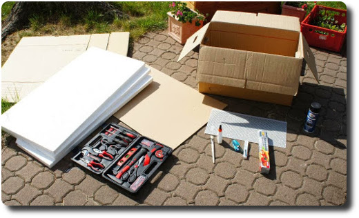
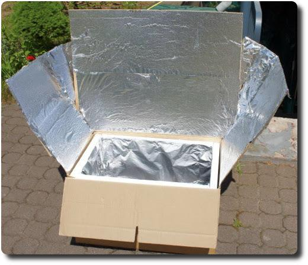

Solarbox selber bauen
Auch wenn jetzt Winter ist - der nächste Sommer kommt bestimmt. Warum nicht mal eine Solarbox bauen? Damit kann man bei gutem Wetter prima Teewasser erhitzen oder sogar Essen zubereiten. Ich zeige hier mal ein paar Bilder von meinem Projekt.
Ich muss dazu sagen, dass meine Materialauswahl nicht die beste war, da ich Styroporplatten verwendet habe, die bei über 80°C zu schmelzen beginnen. Hitzebeständigere Schaumplatten oder dünnes Holz sind hier besser geeignet. Ein Muss ist die Glasplatte zum Abdecken, damit die Wärme drin bleibt.
Temperaturen über 100°C lassen sich bei guter Sonneneinstrahlung in der Solarbox leicht erreichen.
Eine Bauanleitung gibt es hier: http://www.umweltinstitut.org/archiv/archiv-energie-und-klima/fachinformationen/bauanleitung-solarkocher.html
Und Kochrezepte gibt's z.B. hier: http://blog.sun-oven.de/
Viel Spaß beim Kochen mit der Sonne! :)
